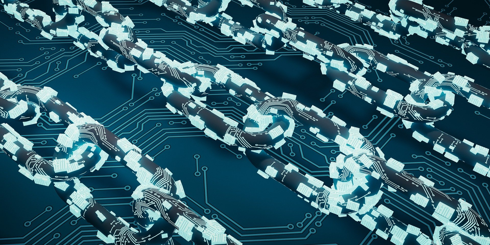
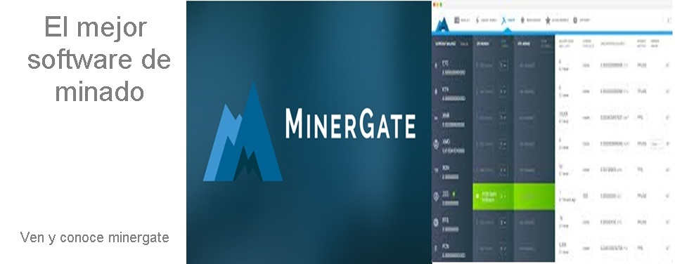
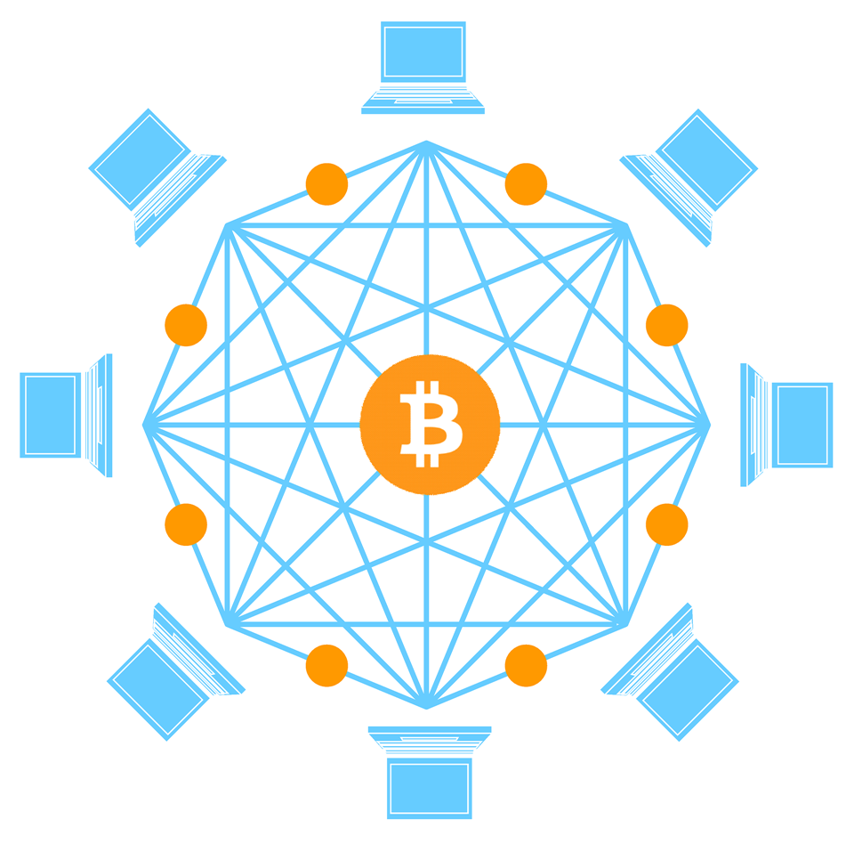
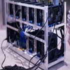
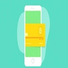
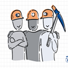
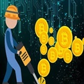
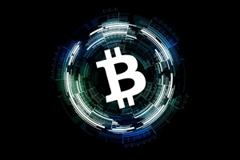
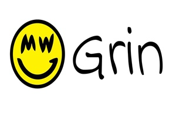

Blockchain
Para empezar a adentrarnos en el mundo de las criptomonedas primero tenemos que conocer
un termino muy mencionado: Blockchain
La cadena de bloques, más conocida por el término en inglés blockchain, es un registro único,
consensuado y distribuido en varios nodos de una red. En el caso de las criptomonedas, podemos
pensarlo como el libro contable donde se registra cada una de las transacciones.
Su funcionamiento puede resultar complejo de entender si profundizamos en los detalles internos de su implementación, pero la idea básica es sencilla de seguir.
La definición de blockchain más básica sería: un registro compartido y digitalizado que no puede modificarse una vez que una transacción ha sido registrada y verificada.
Todas las partes de la transacción, así como un número significativo de terceros, mantienen una copia del registro (es decir, la cadena de bloques), lo que significa que sería
prácticamente imposible modificar cada copia del registro globalmente para falsificar una
transacción.
En cada bloque se almacenan:
- Una cantidad de registros o transacciones válidas
- Información referente a ese bloque
- Su vinculación con el bloque anterior y el bloque siguiente a través del hash de cada bloque ─un código único que sería como la huella digital del bloque.
Por lo tanto, cada bloque tiene un lugar específico e inamovible dentro de la cadena, ya que cada bloque contiene información del hash del bloque anterior.
La cadena completa se guarda en cada nodo de la red que conforma la blockchain, por lo que se almacena una copia exacta de la cadena en todos los participantes
de la red.

La blockchain generalmente se asocia con el Bitcoin y otras criptomonedas, pero estas son solo la punta del iceberg. Y es que esta tecnología, que tiene sus orígenes en
1991, cuando Stuart Haber y W. Scott Stornetta describieron el primer trabajo sobre una
cadena de bloques asegurados criptográficamente, no fue notoria hasta 2008, cuando se hizo
popular con la llegada del bitcoin. Pero actualmente su utilización está siendo demandada en
otras aplicaciones comerciales y se proyecta un crecimiento anual del 51% para el 2022 en
varios mercados, como el de las instituciones financieras o el de Internet de las Cosas
(IoT), según publicó MarketWatch.
¿Por que es tan seguro?
Al ser una tecnología distribuida, donde cada nodo de la red almacena una copia
exacta de la cadena, se garantiza la disponibilidad de la información en todo momento.
En caso de que un atacante quisiera provocar una denegación de servicio, debería anular todos
los nodos de la red, ya que basta con que al menos uno esté operativo para que la información
esté disponible.
Por otro lado, al ser un registro consensuado, donde todos los nodos contienen la misma información,
resulta casi imposible alterar la misma, asegurando su integridad. Si un atacante quisiera
modificar la información en la cadena de bloques, debería modificar la cadena completa en al
menos el 51% de los nodos.
Por último, dado que cada bloque está matemáticamente vinculado al bloque siguiente, una vez que se añade uno nuevo a la
cadena, el mismo se vuelve inalterable. Si un bloque se modifica su relación con la cadena se
rompe. Es decir, que toda la información registrada en los bloques es inmutable y perpetua.
De esta forma la tecnología de blockchain nos permite almacenar información que jamás se podrá perder, modificar o eliminar.
Básicamente, cualquier tipo de información que necesite ser preservada de forma intacta y que deba
permanecer disponible puede ser almacenada en blockchain de manera segura, descentralizada y más
económica que a través de intermediarios. Además, si esa información se guarda cifrada se puede
garantizar su confidencialidad, ya que solo quien cuente con la llave de cifrado pueda acceder a
ella.
Minado de criptomoneda
La minería de criptomonedas es uno de los elementos claves que permiten que las
criptomonedas funcionen como una red descentralizada de igual a igual sin la necesidad de
una autoridad central de terceros.
La minería de criptomonedas como Bitcoin recibe este nombre porque, en esencia, es similar
a la minería de cualquier mineral como el oro o el carbón. Solo que, en vez de tomar un pico y
una carretilla para extraer valor de la tierra, usas programas y hardware de computación para
extraer valor de la red.
Es un proceso en el que las transacciones entre usuarios se verifican y se agregan al libro público de
blockchain y también un proceso que se utiliza para introducir nuevas monedas en el suministro
circulante existente.
funcionamiento
Cuando minas criptomonedas, pones el poder de procesamiento de tu hardware al servicio de una red, llámese Bitcoin, Ethereum,
Litecoin, Monero, etc. Estas redes de criptomonedas necesitan el poder de tus equipos para
confirmar que las transacciones de sus usuarios son válidas. Todas las transacciones válidas
son agrupadas en un bloque que luego añades a la blockchain.
Agregar nuevos bloques a la cadena te hace merecedor de una recompensa que consta de dos partes: las comisiones pagadas por los
usuarios que hicieron las transacciones incluidas en el bloque más las nuevas monedas generadas.
Sí, con cada bloque nuevo se emiten nuevas criptomonedas y tú, que lo minaste, las recibes.
Es como si el banco central de tu país te enviara billetes recién impresos por prestarle tu
computadora; excepto que, al hablar de Bitcoin, hablamos de dinero verdaderamente orgánico.

En pocas palabras, la minería de Bitcoin y otras criptomonedas se pudiera definir como un proceso en el que se validan y agrupan
las transacciones de una red, para luego añadirlas a su blockchain. Este proceso brinda seguridad a
la red al mismo tiempo que permite la generación de nuevas monedas.
Motivo de la recompensa
El propósito principal de la recompensa de bloque es el de incentivarte, como minero, a actuar de forma honesta. Es decir, que no te
prestes para atacar la red de ningún modo o aprovecharte de cualquier falla que notes para
lucrarte, mientras dañas a los demás usuarios. Debes saber que cualquier ataque a una red de
criptomonedas puede impactar negativamente el valor de su moneda nativa. Si tú recibes
dividendos en esta criptomoneda, tus ganancias también se verán afectadas.

Otro aspecto que refuerza el pago de recompensas por bloque minado es la descentralización. Ya que, el interés por recibir algo valioso
a cambio de tu servicio es lo que anima a muchas personas a sumarse a la minería de Bitcoin y
otras criptomonedas; lo que, por consecuencia, ayuda a que estas redes sean más descentralizadas.
Cuando la validación de transacciones y la emisión de monedas de una red reposa sobre una entidad única, no tenemos más que
un banco central privado. Pero, cuando cualquiera es libre de participar en un consenso que garantiza la transparencia de un
sistema financiero, desde la emisión de dinero hasta la verificación de cada transacción
realizada, entonces se empieza a construir un sistema descentralizado.
Recomendaciones
Antes de empezar te recomiendo seguir estas indicaciones:
-

Compre un equipo para minar
La minería de Bitcoin criptomonedas es una actividad muy competitiva. La
dificultad para minar aumenta cada día, a medida que más y más mineros vienen a bordo
con equipos de minería de última generación. Antes incluso de comenzar a minar , necesita
prepararse bien. Asegúrese de mirar las diferentes opiniones de hardware minería Bitcoin para saber qué minero es mejor para usted.
En el pasado era posible extraer criptomonedas con su ordenador o con una tarjeta gráfica
(también conocida como GPU mining). Hoy en día, sin embargo, el nicho minero se ha vuelto tan
competitivo que necesitará utilizar mineros ASIC – ordenadores especiales diseñados
exclusivamente para minar bitcoins.
-

Consigue un monedero digital
Lo primero que tienes que hacer es conseguir un monedero digital. Debido a que las
criptomonedas son una moneda basada en Internet, necesitas un lugar para guardarlas.
Una vez que tenga un monedero, asegúrese de obtener la dirección del mismo.
Será una larga secuencia de letras y números. Cada monedero tiene una manera diferente
de obtener la dirección pública, pero la mayoría de monederos lo ponen bastante fácil.
Ten en cuenta que necesitarás tu dirección Bitcoin PÚBLICA y no tu CLAVE PRIVADA
(que es como una contraseña para tu monedero).
-

Unete a un grupo de minado
Mientras que la recompensa en bloque se otorga al minero que descubre el hash válido primero,
la probabilidad de encontrar el hash es igual a la porción del poder minero total en la red.
Los mineros con un pequeño porcentaje del poder minero tienen una probabilidad muy pequeña
de descubrir el siguiente bloque por su cuenta. Los grupos de minería se crean para resolver
este problema, lo que significa que los mineros, que comparten su poder de procesamiento a
través de una red, comparten la recompensa por igual entre todos los miembros del grupo, de
acuerdo con la cantidad de trabajo que contribuyen a la probabilidad de encontrar un bloque.
-

Obten un software de minado
Ahora que tiene los fundamentos cubiertos, está casi listo para minar. Necesitará un cliente minero
para instalar en su ordenador y que podrá controlar y supervisar su equipo de minería.
Dependiendo de la plataforma de minería que tenga usted tendrá que encontrar el software
adecuado. Muchos grupos de minería tienen su propio software como Bitminer pero algunas no.
Puede encontrar una lista de software de minería de Bitcoin aquí. Si está trabajando en un Mac,
puede utilizar el programa MacMiner. Dos de los software más populares para el PC son BFGMiner
y 50Miner.
Las mejores criptomonedas
Conoce las mejores opciones:

Bitcoin
Entre las mejores criptomonedas para minar es muy probable que
siempre encontremos a la de Nakamoto. Aunque el proceso sigue siendo rentable, este
año se reduce la «recompensa de bloque» a la mitad. La recompensa pasará de 12,5 a
6,25 BTC. Algunos continúan con la expectativa de que el precio del Bitcoin se
dispare después del proceso denominado como halving o ‘reducción a la mitad’.

GRIN
Es una criptodivisa relativamente nueva, sumamente volátil, pero más fácil de minar para aquellos que apenas están iniciándose.
Es posible comenzar a minar GRIN con un GPU de cierta potencia. La criptodivisa también
utiliza un esquema de prueba de trabajo, con una recompensa de bloque de 60 GRIN por bloque.
A diferencia del BTC, esta moneda se enfoca en la privacidad y no tiene una oferta limitada.

Ethereum
Casi tan aclamada como Bitcoin, Ethereum ha conseguido mantenerse
como la segunda criptomoneda más valorada y popular de todos los tiempos. Su éxito se
debe en gran medida a la aplicación de una tecnología Blockchain totalmente
revolucionaria: Ethereum fue el primer sistema en desarrollar las aplicaciones
descentralizadas y los contratos inteligentes (smart contracts).